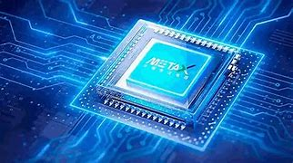
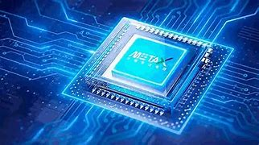

El procesador es la unidad más importante dentro de un sistema informático o una computadora. También conocido como Unidad Central de Procesamiento (CPU), es responsable de procesar y resolver todas las instrucciones y procesos. Es considerado el cerebro del sistema.